方形迷宮
March 15, 2022想在 OpenSCAD 完成迷宮，相對而言，是個比較大的挑戰，dotSCAD 的 maze 提供了一些模組與函式，可以讓你用比較簡單的方式來建立迷宮，不過若能稍微理解一下迷宮的原理，有利於你自行變化迷宮的樣式。
迷宮的單元
迷宮設計的起點是，雖然起點與終點間充滿各種路徑，不過迷宮說穿了，並不是路徑的問題，而是迷宮中某單元與鄰居單元間如何連通的問題，具體而言，就是哪個鄰接單元可以連到我這個單元，而我這個單元可以連到哪一個鄰接單元，也就是從來哪，往哪去。
方形迷宮是迷宮最簡單的一種形式，從它開始吧！每個單元就是一個細胞（cell），一開始彼此都是不通的：
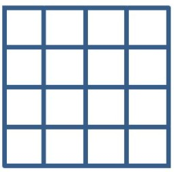
你可能會想，每個單元應該都是長這樣：
這樣確實也是彼此不通，不過，可以更簡單些，每一格如下也是彼此不通：
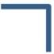
當然，真的排列出來會像是：
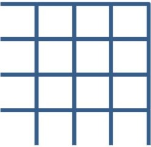
這樣左邊與下面不就沒有牆了嗎？那是繪圖時的問題，繪圖時補上兩條線就可以了，就資料上的關係來說，一個細胞只要有上牆與右牆，彼此排列後就是互不相通了。
在這樣的資料結構下，如果要能通往右邊的細胞，表示沒有右牆，如果可以通往上面的細胞，表示沒有上牆，如果可以往左走，表示左邊的細胞沒有右牆，如果可以往下走，表示下面的細胞沒有上牆。
因此，如果迷宮的每個細胞牆面狀況如下：
上牆, 上牆, 上牆, 上右牆
右牆, 上右牆, 上牆, 右牆
無牆, 右牆, 右牆, 右牆
上牆, 上牆, 右牆, 右牆
你就可以畫出底下的圖案：
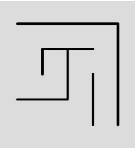
如果左上角為入口，右下角為出口，補上兩條線，就是迷宮了：
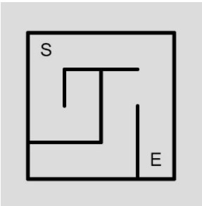
二元樹迷宮
純綷使用亂數，在每個單元產生一種牆面形式，看來確實也像是迷宮，不過不見得每個單元都能到達，也有可能形成道路的迴圈；單元與單元間能互通，也不構成道路迴圈的迷宮，稱為完全迷宮（Perfect maze），這種迷宮該如何構造呢？
答案是，想辦法生成一棵樹，迷宮就是一棵樹，路是節點與節點間的分支，樹的任一分支必然可以到達另一分支，也不會形成迴圈。
生成一棵樹最簡單的方式是二元樹，，用它來理解自動生成迷宮的原理是個不錯的出發點，而且可以生成完美迷宮，也就是任兩個細胞間只有一條路徑可以互通的迷宮。
以 4 乘 4 迷宮為例，首先，每個牆都還沒打穿，任選一個起點：
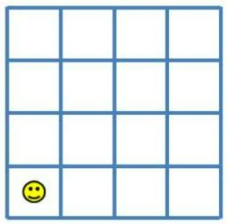
現在來丟硬幣吧！如果是正面，就打掉右邊的牆，反面就打掉上面的牆，然後移到下一格，例如，若硬幣丟出了反面，往右一格移動，狀態會變成：
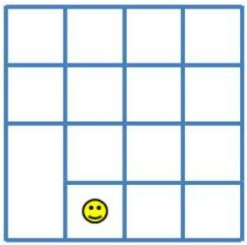
對二元樹演算來說，從哪一格開始，或者下一格是哪格都無所謂，從樹的觀點來看，這就像是哪個節點開始生成分支都無所謂，反正一個節點只會有兩個分支，為了便於說明，下一格就都往右吧！假設現在又依序丟出了 正、反，狀態就會變成：
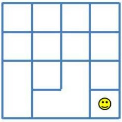
到達最右邊的區塊了，現在該怎麼辦呢？不能打掉右邊的牆了，因為那是迷宮的邊界，只能打掉上面的牆，既然這樣，就表示最右邊一排都不用丟硬幣了，直接打掉上面的牆，那麼就一次處理吧！
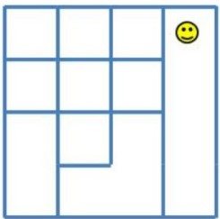
類似地，如果是最上一排，不能打掉上面的牆，因此也不用丟硬幣，一律打掉右邊的牆：
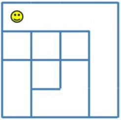
還剩底下算來第二排與第三排還沒處理，那就先來到左下二排：
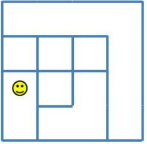
假設硬幣丟出了正、反，並持續往右移動，接著又丟出了反面：
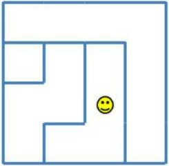
現在只剩一排還沒處理，從該排最左邊開始，並丟出正、正、正：
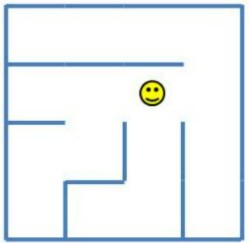
YA！迷宮完成了，入口、出口可以任選，因為任兩個細胞間只有一個路徑連通，至於為什麼是二元樹？來為每個細胞設個中心點，然後將互通的點連接起來：
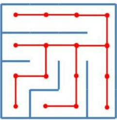
接著不看牆，只看連接中心點的線段，然後稍微轉個角度：
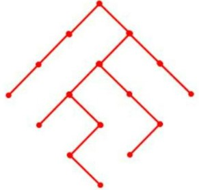
無論是哪種迷宮演算，若要生成完美迷宮，就是形成某種樹狀結構，從某個子節點開始，要往特定一個父裔節點移動，只會有一條路徑，從而保證路徑不會形成迴圈。
就二元樹演算來說，每個細胞基本上就只是丟硬幣決定要打掉上牆或右牆，然而這就表示，連通至父節點的方式，只能是往上或往右，這會令迷宮產生偏差（Bias），不管你怎麼改變生成細胞的順序，最後生成的迷宮，根節點一定是在右上角。
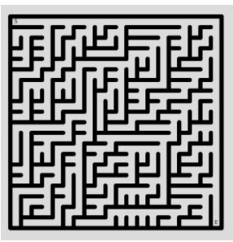
想改進這個偏差的話，可以加入更多隨機性或變化，例如，〈玩轉 p5.js〉的〈遞迴回溯迷宮〉示範了怎麼實作上下左右隨機行進，而不只是往右或往上，有興趣可以參考一下：
mz_square 函式
dotSCAD 的 mz_square 函式，基於以上方形迷宮的單元結構來建立迷宮資料，每個單元被稱為細胞（cell），每個細胞有 x、y 代表位置資訊，以及 t 代表牆面類型資訊（"NO_WALL"、"TOP_WALL"、"RIGHT_WALL"、"TOP_RIGHT_WALL" 或 "MASK"），可以透過 mz_square_get 函式的輔助，來取得細胞中的資訊。
mz_square 函式會以「列（row）、行（column）」二維 list 傳回細胞資訊，這是為了能利用這組細胞，自行繪製想要的迷宮樣式，這也是為何我會有許多迷宮作品的原因。
剛開始使用 mz_square 時先別太複雜，就簡單地用線段繪製吧！
use <maze/mz_square.scad>
use <maze/mz_square_get.scad>
use <line2d.scad>
rows = 10;
columns = 10;
cell_width = 5;
wall_thickness = 2;
cells = mz_square(rows, columns);
for(row = cells, cell = row) {
x = mz_square_get(cell, "x");
y = mz_square_get(cell, "y");
type = mz_square_get(cell, "t");
translate([x, y] * cell_width) {
if(type == "TOP_WALL" || type == "TOP_RIGHT_WALL") {
line2d([0, cell_width], [cell_width, cell_width], wall_thickness);
}
if(type == "RIGHT_WALL" || type == "TOP_RIGHT_WALL") {
line2d([cell_width, cell_width], [cell_width, 0], wall_thickness);
}
}
}
line2d([0, 0], [cell_width * columns, 0], wall_thickness);
line2d([0, 0], [0, cell_width * rows], wall_thickness);
如果只是單純的直線，可以使用 dotSCAD 的 line2d 模組，它不是基於 hull 建立直線，速度會比較快，如上看到的，你可以基於 x、y 與牆面類型，計算要在哪個位置繪製牆面，這會建立以下的迷宮：
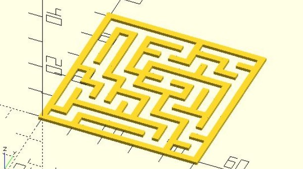
mz_squarewalls 函式
如果只是單純地要建立方形迷宮，有沒有更簡單的方式？有的！可以使用 dotSCAD 的 mz_squarewalls 函式，它會將每個細胞的位置、牆面資訊轉換為一組線段，也就是多個點座標形成的 list，你只要用 list 來繪製線段就可以了：
use <maze/mz_square.scad>
use <maze/mz_squarewalls.scad>
use <polyline_join.scad>
rows = 20;
columns = 20;
cell_width = 5;
wall_thickness = 2;
cells = mz_square(rows, columns);
walls = mz_squarewalls(cells, cell_width);
for(wall = walls) {
polyline_join(wall)
square(wall_thickness);
}
建立的迷宮如下：
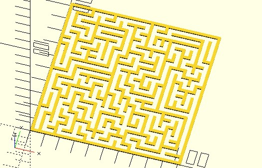
當然，mz_square 的傳回資訊比較有彈性，像是用來繪製蜂巢狀迷宮，你在方才的牆面資訊中還有看到 "MASK"，這表示還可以建立迷宮遮罩？是的！這些在之後的文件還會談到…